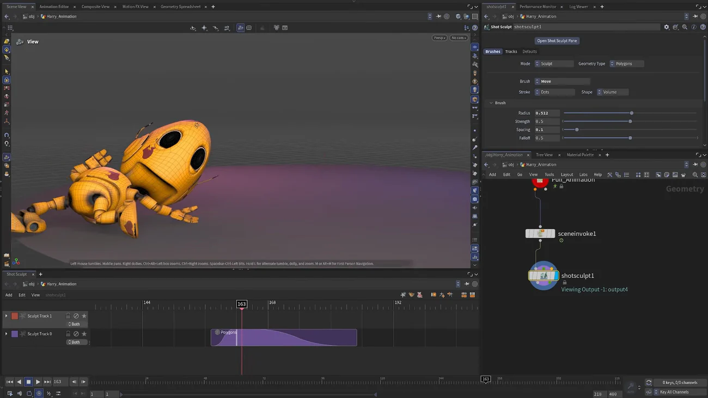

アニメーション済みのシーンにスカルプトを足す — Shot Sculpt
出典: Houdini 22 | How to Sculpt on Animated Scene （SideFX 公式「Houdini 22 How-To」の1本 / Houdini 22 / 3:39 / 英語）。 このページは、上記の動画を見ながら自分用にまとめた日本語の学習メモです。SideFX 公式の翻訳ではありません。
何のための機能か
リグでは出せない誇張を、特定のフレームだけメッシュを直接引っぱって足す機能です。
動画の例は「画面外に乱暴に引き抜かれる」動きで、リグの範囲を超えたストレッチを後乗せしています。 カートゥーン的な誇張や、ヒットの一瞬の潰しに効きます。
手順
- アニメーションが終わったら Scene Invoke を配置し、 Unpack Geometry を有効にします。これでキャラのジオメトリに手が届く状態になります
- Shot Sculpt を配置して第1入力に繋ぎます
- 下部に新しいパネルを開き、Animation → Shot Sculpt を出します（作業領域を広く取ります）
- ビューポートで
Enterを押して Shot Sculpt ステートに入ります - 目的のフレームへ移動し
3を押します（Move ツールのホットキー。 Shot Sculpt では基本これだけ使います） - 引っぱると新しいトラックが自動で作られます。 効き始めが早すぎたらトラックを後ろにずらして調整します
- 2つ目のスカルプトを足すには Add → Add Sculpt Track、または
Ctrl+T - キャッシュに入れて実時間で再生確認します

画面で確認した設定
| Mode / Geometry Type | Sculpt / Polygons |
| Brush / Stroke / Shape | Move / Dots / Volume |
| Radius / Strength | 0.512 / 0.5 |
| Spacing / Falloff | 0.1 / 0.5 |
| ネットワーク | Pull_Animation → sceneinvoke1 → shotsculpt1 |
トラックという仕組み
スカルプトは1つ1つがタイムライン上のトラックになり、 効き始めと終わりがエンベロープで表現されます。
だから「いつ効かせるか」を後から動かせますし、複数のスカルプトを重ねられます。 1回で完璧に彫るのではなく、浅いスカルプトを複数トラックに分けて時間をずらすのが使い方です。
アニメーションを直接壊すのではなく、上に層として乗せる形になっているので、 気に入らなければトラックを消せば元に戻ります。
つまずくところ
Scene Invoke で Unpack Geometry を有効にしないと何も選択できません。
APEX のキャラはパックされたジオメトリなので、Shot Sculpt が触れる状態になっていないのです。 「ノードを選んでいるのに何もできない」ときはここです。
この回のまとめ
- Scene Invoke → Unpack Geometry を有効に → Shot Sculpt の順です
- ステートに入って
3（Move）で引っぱるだけ。ブラシは基本これだけ使います - スカルプトはトラックとして積まれ、効くタイミングを後から動かせます
- 浅いスカルプトを複数トラックに分けて時間差で効かせるのが使い方です
Ctrl+Tでトラックを追加できます- Unpack Geometry を忘れると何も選択できません